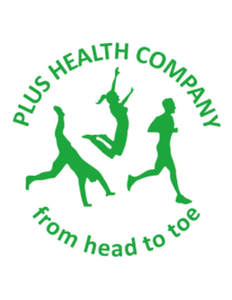

Trade Mark Journal No.2025/015 11 April 2025
UK00004181030 28 March 2025 (16,41,44)

- Class 16
- Exercise books.
- Class 41
- Medical education services; Training services in the field of medical disorders and their treatment; Health and wellness training; Health club services [health and fitness training]; Education services relating to therapeutic treatments; Health education; Physical fitness education services; Training services relating to occupational health; Physical health education; Education services relating to medicine; Education services relating to yoga; Training and education services; Education and training services; Vocational education and training services; Education services relating to health; Providing of training in the field of health care and nutrition; Training or education services in the field of life coaching; Health club services [exercise]; Health and fitness training; Education services relating to physical fitness; Physical education services; Educational and training services relating to healthcare; Education services relating to nutrition; Education services relating to meditation; Coaching; Coaching [training]; Career counselling and coaching; Coaching services; Education, teaching and training; Personal trainer services [fitness training]; Meditation training; Training; Training in yoga; Fitness training services; Physical fitness training services; Education and training; Fitness and exercise training services; Fitness and exercise instruction; Exercise instruction; Exercise and fitness classes; Exercise classes; Supervision of physical exercise; Exercise [fitness] training services; Instruction in group exercise; Conducting classes in exercise; Exercise [fitness] advisory services; Providing fitness and exercise facilities; Provision of exercise facilities; Provision of instruction relating to exercise; Providing instruction and equipment in the field of physical exercise; Physical fitness consultation; Physical fitness instruction; Conducting physical fitness conditioning classes; Instruction courses relating to physical fitness; Pilates instruction; Training services relating to fitness; Yoga instruction.
- Class 44
- Medical counselling; Health counselling; Counselling relating to the psychological treatment of medical ailments; Medical counselling services; Health counseling; Medical health assessment services; Health clinic services [medical]; Physiotherapy [physical therapy]; Health care relating to relaxation therapy; Occupational therapy and rehabilitation; Health care consultancy services [medical]; Medical services in the field of treatment of chronic pain; Health care relating to therapeutic massage; Providing mental health rehabilitation facilities; Counselling relating to occupational therapy; Counselling relating to the psychological relief of medical ailments; Lifestyle counseling and consultancy for medical purposes; Physiotherapy services; Medical nursing services; Nursing services (Medical -); Health clinic services; Nutrition counselling; Provision of medical treatment; Medical clinic services; Counseling relating to occupational therapy; Public health counseling; Medical services for treatment of the skin; Physiotherapy; Occupational therapy services; Health assessment services; Health care relating to acupuncture; Physical therapy services; Medical and healthcare clinics; Health care relating to remedial exercise; Medical and healthcare services; Psychological treatment; Exercise facilities for health rehabilitation purposes (Provision of -); Medical counseling relating to stress; Medical services for the treatment of conditions of the human body; Therapy services; Medical nursing; Nursing, medical; Health spa services; Psychological counselling; Health centre services; Rental of medical and health care equipment; Acupuncture; Acupuncture services; Massage and therapeutic shiatsu massage; Bodywork therapy; Beauty therapy treatments; Massages; Therapeutic treatment of the body; Massage services; Podiatrist; Dermatology services; Medical care of feet; Chiropractic services; Foot massage services; Sports medicine services; Foot care; Services for the care of the feet.
Jennifer Louise Redfern